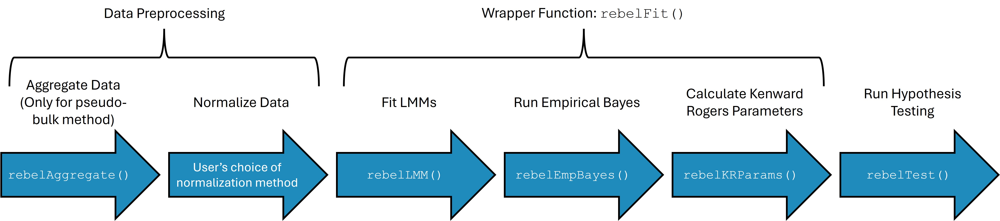

Introduction
REBEL is an R package for analyzing cell-type specific differential expression in longitudinal and other repeated measure scRNA-seq studies. This package implements a method using a linear mixed model (LMM) framework with an empirical Bayes process to improve estimation of residual and random effect variance by sharing information across genes. This method uses either cell-level data, in which case random intercepts for subject and sample are used to account for correlation in the data, or pseudo-bulk data, in which case cell-level counts are aggregated across cells and a random intercept for subject is included in the model. Models can be fit with multiple fixed effects including group variables that vary on a subject level (i.e. disease vs control), variables that vary within a subject, such as time related variables (i.e. baseline, follow-up), and interaction effects. Hypothesis testing is performed on model coefficients or linear contrasts using Kenward-Roger degrees of freedom estimated using empirical Bayes variance estimates.
Installation
REBEL is available on github at: https://github.com/ewynn610/REBEL.
It can be installed using:
if (!requireNamespace("devtools", quietly = TRUE)) {
install.packages("devtools")
}
devtools::install_github("https://github.com/ewynn610/REBEL")Package Framework
REBEL is designed to test for differential expression for covariates within a single cell type or subpopulation of cells. The package workflow begins using scRNA-seq data that has been processed and data has been filtered to a cell type of interest.
Figure 1 shows the basic workflow of the REBEL package which can be split into three sections:
Data preprocessing: aggregating data (pseudo-bulk option only) and applying a normalizing transformation to the counts.
Fitting REBEL models: fitting LMM’s, calculating empirical Bayes variance estimates, calculating parameters that are used for the Kenward Roger’s degrees of freedom method.
Hypothesis testing: performing tests for differential expression for model fixed effects.

We will provide a more in depth of this process using a real example.
Simulation and processing of Example Data
We use data simulated using the rescueSim package, which
can be used to simulate single-cell type longitudinal scRNA-seq data. We
use preset simulation parameters available in the package, but
parameters can also be estimated from empirical data.
We simulated data with a two group (ex. control group, treatment group), two timepoint (ex. baseline, follow-up) design and simulate 5 subjects for each group (10 total subjects, 20 samples). Data is simulated so that 20% of genes are differentially expressed with a log-fold change of 0.5 between the group1 at time1 and all other group/time combinations. Samples were simulated to have between 50 and 150 cells with the number of cells per sample drawn from a discrete uniform distribution. To decrease computation times for this example, we analyze only the first 100 genes in the simulated data.
library(rescueSim)
library(SummarizedExperiment)
library(REBEL)
## Set seed for reproducibility
set.seed=24
## Load present
data("RecAM_params")
## Adjust parameters
RecAM_params <- updateRescueSimParams(
paramObj = RecAM_params,
paramValues = list(
twoGroupDesign = T,
maxCellsPerSamp=150,
minCellsPerSamp=50,
propDE=.2,
deLog2FC=1
)
)
## Simulate data
dat <- simRescueData(RecAM_params)
## Function returns a single cell experiment object
class(dat)## [1] "SingleCellExperiment"
## attr(,"package")
## [1] "SingleCellExperiment"
## Remove genes that have more than 75% 0's
idx_rm=which(rowSums(assay(dat, "counts")==0)>(.75*ncol(dat)))
dat=dat[-idx_rm,]
## Subset to first 100 genes
dat=dat[1:100,]
## The raw counts are located in the counts assay of the object
assay(dat, "counts")[1:5,1:5]## cell_1 cell_2 cell_3 cell_4 cell_5
## NOC2L 2 1 1 2 1
## ISG15 2 1 16 6 15
## SDF4 0 0 4 3 0
## B3GALT6 0 0 0 0 3
## UBE2J2 1 0 1 1 3## DataFrame with 6 rows and 4 columns
## sampleID subjectID time group
## <character> <character> <character> <character>
## cell_1 sample1 subject1 time0 group0
## cell_2 sample1 subject1 time0 group0
## cell_3 sample1 subject1 time0 group0
## cell_4 sample1 subject1 time0 group0
## cell_5 sample1 subject1 time0 group0
## cell_6 sample1 subject1 time0 group0Cell-level Workflow
Data Preprocessing
First we will show the workflow for an analysis using cell-level
data. The first step in the workflow is to perform a transformation to
normalize the raw counts. We use the variance stabilizing transformation
from the sctransform package, but users can use any
transformation that produces normally distributed data for scRNA-seq
data. We save the normalized data in the normcounts assay
of the singlecellexperiment object.
Model Fitting
The model fitting process includes three steps. First LMM models are
fit using the rebelLMM function. For cell-level data,
models are fit using random intercept terms for sample and subject as
well as specified fixed effect terms. We utilize the
lmerTest package to fit individual models. Next, using the
rebelEmpBayes function, residual and random effect
variances are re-estimated using an empirical Bayes process where
information across genes is borrowed to get more accurate estimates.
Finally, parameter estimates used in the Kenward-Roger degrees of
freedom method are calculated using the rebelKRParams
function. We draw on the pbkrtest package to estimate these
values, but make adjustments so that empirical Bayes estimates are used
to get the parameter estimates. We also simplify the estimation process
by making it specific to random intercept models, which decreases
computation time considerably.
We provide a wrapper function rebelFit that combines
these three functions into one convenient function. Below, we outline
the function arguments used in rebelFit.
| Argument | Description | Default |
|---|---|---|
object |
SingleCellExperiment object (cell-level
data) or SummarizedExperiment object (pseudo-bulk data)
containing normalized count values in one of the object assays and
cell/sample level meta data in the colData slot. |
NA |
assay |
String specifying assay in object which
holds normalized count values. |
"normcounts" |
fixedEffects |
One sided linear formula describing the fixed-effects
on the right of the ~ operator. Terms should be separated by +
operators. Terms should be variables in colData. |
NA |
subjectVariable |
String denoting name of subject identifier variable in
the colData to be used as the subject-level random effect
in the LMM model. |
NA |
sampleVariable |
String denoting name of sample identifier variable in
the colData to be used as the sample-level random effect in
the LMM model. For pseudo-bulk data where no sample-level random effect
is used, should be NULL. |
NULL |
normalizedCounts |
Optional matrix-like object containing normalized
counts. Used in conjunction with colData argument in place
of object. Matrix should contain genes in the rows and
cells (cell-level data) or samples (pseudo-bulk data) in the
columns. |
NULL |
colData |
Optional dataframe object containing cell/sample level
meta data which is used with normalizedCounts argument in
place of object. Row names of dataframe should match column
names of normalizedCounts. |
NULL |
pseudoBulk |
Logical value indicating whether a pseudo-bulk or cell-level analysis is being performed. | TRUE |
parallel |
Logical value indicating whether to use parallelization
via mclapply. |
FALSE |
nCores |
Number of cores to use if parallel is
TRUE. |
1 |
outputFits |
Logical value indicating whether or not to include fit
objects from lmerTest in the output. Only necessary if user
would like to inspect elements of the object. May use a large amount of
memory if TRUE. |
FALSE |
quiet |
Logical value indicating whether messages should be printed at each step | FALSE |
REML |
Logical value indicating if LMM models should be fit using REML or regular ML | TRUE |
Now we use fit the REBEL models using rebelFit. We will
fit a model with time and group fixed effects as well as an interaction
effect.
rebelFit_obj<-rebelFit(object=dat, fixedEffects = ~time*group,
subjectVariable ="subjectID", sampleVariable = "sampleID",
pseudoBulk = F)## [1] "Fitting LMM Models"## [1] "Getting Empirical Bayes Estimates"
## [1] "Getting Parameters for Kenward-Rogers method"The resulting object is of the class RebelFit which
holds information about the function call, model parameters and model
fits.
class(rebelFit_obj)## [1] "RebelFit"
## attr(,"package")
## [1] "REBEL"The table below describes the slots in the RebelFit
object.
| Slot | Description |
|---|---|
geneNames |
Vector containing gene names taken from the row names
of the object or normalizedCounts provided in
the rebelFit function call |
fits |
List of lmerModLmerTest fit objects with
one object for each gene. Not included if
outputFits=FALSE. |
modelMatrix |
Design matrix for the model fixed effects |
coefficients |
Dataframe of model coefficients with columns representing the model fixed effects and each row representing an individual gene |
originalFitVar |
Dataframe of residual and random effect variance values from original model fits before empirical Bayes estimation. A logical value indicating whether the original fit was singular or not is also included. |
miscFitInfo |
Miscellaneous information from model fits that is needed for hypothesis testing. |
sampleVariable |
String denoting name of sample identifier variable in
the colData which was used as the sample-level random
effect in the LMM model. For pseudo-bulk data where no sample-level
random effect is used, this value is NULL. |
subjectVariable |
String denoting name of subject identifier variable in
the colData which was used as the subject-level random
effect in the LMM model. |
pseudoBulk |
Logical value indicating whether a pseudo-bulk or cell-level analysis is being performed. |
EBEstimates |
Dataframe with the empirical Bayes residual variance and random intercept variance for each gene. |
EBParameters |
Dataframe with the parameters used to get empirical Bayes estimates. |
vcovBetaList |
List of variance/covariance matrices with one matrix per gene. |
vcovBetaAdjList |
List of adjusted variance/covariance matrices for each
gene calculated using the Kenward-Roger’s method. Additional parameters
used for the Kenward-Roger’s degrees of freedom estimation are also
included. See pbkrtest function vcovAdj for
more information. |
Hypothesis Testing
After fitting models and estimating empirical Bayes and
Kenward-Roger’s parameters, the rebelTest function can be
used to perform differential expression testing on fixed effects. The
function takes a RebelFit object and then either a
coef argument or a contrast argument. The
value for coef should be a string representing a model
coefficient, while contrast should contain a numeric vector
the same length as the number of fixed effects containing a
one-dimensional contrast.
Here we test the interaction coefficient.
interaction_coef_test=rebelTest(rebelFit_obj, coef="timetime1:groupgroup1")The output of the function is a dataframe with testing information, including Kenward-Rogers estimates for the standard error and degrees of freedom as well as the FDR adjusted p-values, for each gene.
head(interaction_coef_test)## Estimate Std.Error t.value df p_val_raw p_val_adj
## NOC2L -0.2089158 0.09812510 -2.129076 7.655385 0.067422061 0.21960745
## ISG15 -0.5041844 0.14102609 -3.575114 7.931122 0.007343288 0.04589555
## SDF4 -0.3080974 0.15342674 -2.008108 7.948683 0.079740913 0.23453210
## B3GALT6 -0.1981679 0.09766849 -2.028985 7.683506 0.078435440 0.23453210
## UBE2J2 -0.2345965 0.13024403 -1.801207 7.900398 0.109822423 0.28900638
## INTS11 -0.1340794 0.09819009 -1.365508 7.649573 0.210890712 0.45845807We can obtain identical results using a numeric contrast to test for the interaction effect.
interaction_contrast_test=rebelTest(rebelFit_obj, contrast = c(0,0,0,1))
head(interaction_contrast_test)## Estimate Std.Error t.value df p_val_raw p_val_adj
## NOC2L -0.2089158 0.09812510 -2.129076 7.655385 0.067422061 0.21960745
## ISG15 -0.5041844 0.14102609 -3.575114 7.931122 0.007343288 0.04589555
## SDF4 -0.3080974 0.15342674 -2.008108 7.948683 0.079740913 0.23453210
## B3GALT6 -0.1981679 0.09766849 -2.028985 7.683506 0.078435440 0.23453210
## UBE2J2 -0.2345965 0.13024403 -1.801207 7.900398 0.109822423 0.28900638
## INTS11 -0.1340794 0.09819009 -1.365508 7.649573 0.210890712 0.45845807
identical(interaction_coef_test, interaction_contrast_test)## [1] TRUEWe can also test more complicated contrasts such as for a difference between timepoints in group 1.
## Estimate Std.Error t.value df p_val_raw p_val_adj
## NOC2L -0.1986898 0.06727607 -2.953351 7.305851 0.020291773 0.073372464
## ISG15 -0.5639352 0.09810637 -5.748202 7.588691 0.000521982 0.005313388
## SDF4 -0.1649173 0.10691655 -1.542486 7.610035 0.163447000 0.251203943
## B3GALT6 -0.1242429 0.06718554 -1.849251 7.432742 0.104422259 0.193374554
## UBE2J2 -0.2117479 0.09036643 -2.343215 7.529973 0.049102168 0.125797367
## INTS11 -0.1176068 0.06728830 -1.747805 7.288035 0.122297682 0.209418831Pseudo-bulk Workflow
The pseudo-bulk workflow follows the same general framework as the cell-level workflow. Below we outline the workflow, highlighting the differences between the pseudo-bulk and cell-level workflows.
Data Preprocessing
Pseudo-bulk analysis requires the additional preprocessing step of
aggregating counts for each gene across each sample before
normalization. We include the function rebelAggregate to
accomplish this step. The function arguments are summarized below.
| Argument | Description | Default |
|---|---|---|
object |
SingleCellExperiment object containing
count values in one of the object assays and cell level meta data in the
colData slot. |
NA |
countsAssay |
String specifying assay in object which
holds count values. |
"counts" |
counts |
Optional matrix-like object containing counts. Used in
conjunction with colData argument in place of
object. Matrix should contain genes in the rows and cells
in the columns. |
NULL |
colData |
Optional dataframe object containing cell level meta
data which is used with counts argument in place of
object. Row names of dataframe should match column names of
normalizedCounts. |
NULL |
sampleVariable |
String denoting name of sample identifier variable in
the colData which counts should be aggregated over. |
NA |
Here, we aggregate the data by “sampleID”.
pb_dat=rebelAggregate(object=dat, countsAssay="counts", sampleVariable="sampleID")The resulting object is of the class
summarizedExperiment and includes pseudo-bulk counts in the
counts assay. All colData variables that did
not vary within sampleID are also included in the
colData slot.
class(pb_dat)## [1] "SummarizedExperiment"
## attr(,"package")
## [1] "SummarizedExperiment"## sample1 sample11 sample10 sample20 sample12 sample2 sample13 sample3
## NOC2L 81 37 89 40 22 23 73 86
## ISG15 962 397 1102 623 396 316 839 877
## SDF4 154 91 282 143 87 61 200 171
## B3GALT6 54 18 55 16 18 9 55 43
## UBE2J2 92 28 123 53 35 15 71 78
## INTS11 65 18 78 33 14 14 61 52
## sample14 sample4 sample15 sample5 sample16 sample6 sample17 sample7
## NOC2L 67 40 33 69 55 63 45 38
## ISG15 999 519 305 1224 751 910 570 521
## SDF4 197 182 100 207 146 166 131 81
## B3GALT6 61 26 18 60 42 30 26 25
## UBE2J2 71 39 26 73 60 86 40 42
## INTS11 58 25 21 67 36 41 15 14
## sample18 sample8 sample19 sample9
## NOC2L 75 82 37 47
## ISG15 729 824 728 695
## SDF4 234 241 193 141
## B3GALT6 44 35 33 32
## UBE2J2 71 71 68 46
## INTS11 62 59 34 31
colData(pb_dat)## DataFrame with 20 rows and 4 columns
## sampleID subjectID time group
## <character> <character> <character> <character>
## sample1 sample1 subject1 time0 group0
## sample11 sample11 subject1 time1 group0
## sample10 sample10 subject10 time0 group1
## sample20 sample20 subject10 time1 group1
## sample12 sample12 subject2 time1 group0
## ... ... ... ... ...
## sample7 sample7 subject7 time0 group1
## sample18 sample18 subject8 time1 group1
## sample8 sample8 subject8 time0 group1
## sample19 sample19 subject9 time1 group1
## sample9 sample9 subject9 time0 group1The remainder of the workflow largely follows the cell-level analysis
workflow. First, we normalize the data. For pseudo-bulk data we use the
VST transformation from the DESeq2 package, but any
transformation for RNA-seq data that yields normally distributed counts
can be used.
## Apply VST and save results in normcounts assay
assay(pb_dat,"normcounts")=DESeq2::varianceStabilizingTransformation(assay(pb_dat,"counts"))Model Fitting
We fit the REBEL models using the rebelFit function, but with the
pseudo-bulk summarizedExperiment object as an argument.
Additionally, because counts are aggregated over sample, only a
subject-level random intercept is included in the model. Thus, the
sampleVariable argument does not need to be specified
## Fitting the models
pbFits=rebelFit(pb_dat, fixedEffects = ~time*group, subjectVariable = "subjectID",
pseudoBulk = T)## [1] "Fitting LMM Models"
## [1] "Getting Empirical Bayes Estimates"
## [1] "Getting Parameters for Kenward-Rogers method"Hypothesis Testing
Hypothesis testing is done in the same way as the cell-level workflow
using the rebelTest function. Below we test the interaction
coefficient.
## Estimate Std.Error t.value df p_val_raw p_val_adj
## NOC2L -0.5064336 0.2541172 -1.992913 8 0.08140494 0.3391873
## ISG15 -0.2821598 0.2275470 -1.240007 8 0.25010926 0.6413058
## SDF4 -0.3618543 0.2899581 -1.247954 8 0.24733577 0.6413058
## B3GALT6 -0.5082002 0.2733198 -1.859361 8 0.10002871 0.3803757
## UBE2J2 -0.5410433 0.2648301 -2.042983 8 0.07532430 0.3274969
## INTS11 -0.2763810 0.2262583 -1.221529 8 0.25665819 0.6416455Like the cell-level analysis, we can also specify numeric contrasts. Here we test for the difference between timepoints in group1.
## Estimate Std.Error t.value df p_val_raw p_val_adj
## NOC2L -0.360129464 0.1796880 -2.00419305 8 0.07999485 0.2856959
## ISG15 -0.221590281 0.1609000 -1.37719244 8 0.20575481 0.5685318
## SDF4 0.008074233 0.2050313 0.03938049 8 0.96955206 0.9993019
## B3GALT6 -0.158280943 0.1932663 -0.81897852 8 0.43651408 0.7348091
## UBE2J2 -0.279719693 0.1872632 -1.49372521 8 0.17360081 0.5105906
## INTS11 -0.211663429 0.1599888 -1.32298939 8 0.22240175 0.5685318Session Information
## R version 4.6.1 (2026-06-24)
## Platform: x86_64-pc-linux-gnu
## Running under: Ubuntu 24.04.4 LTS
##
## Matrix products: default
## BLAS: /usr/lib/x86_64-linux-gnu/openblas-pthread/libblas.so.3
## LAPACK: /usr/lib/x86_64-linux-gnu/openblas-pthread/libopenblasp-r0.3.26.so; LAPACK version 3.12.0
##
## locale:
## [1] LC_CTYPE=C.UTF-8 LC_NUMERIC=C LC_TIME=C.UTF-8
## [4] LC_COLLATE=C.UTF-8 LC_MONETARY=C.UTF-8 LC_MESSAGES=C.UTF-8
## [7] LC_PAPER=C.UTF-8 LC_NAME=C LC_ADDRESS=C
## [10] LC_TELEPHONE=C LC_MEASUREMENT=C.UTF-8 LC_IDENTIFICATION=C
##
## time zone: UTC
## tzcode source: system (glibc)
##
## attached base packages:
## [1] stats4 stats graphics grDevices utils datasets methods
## [8] base
##
## other attached packages:
## [1] future_1.75.0 REBEL_0.1.0
## [3] SummarizedExperiment_1.42.0 Biobase_2.72.0
## [5] GenomicRanges_1.64.0 Seqinfo_1.2.0
## [7] IRanges_2.46.0 S4Vectors_0.50.1
## [9] BiocGenerics_0.58.1 generics_0.1.4
## [11] MatrixGenerics_1.24.0 matrixStats_1.5.0
## [13] rescueSim_0.99.0
##
## loaded via a namespace (and not attached):
## [1] Rdpack_2.6.6 MAST_1.38.0
## [3] pbapply_1.7-4 gridExtra_2.3.1
## [5] rlang_1.3.0 magrittr_2.0.5
## [7] scater_1.40.2 otel_0.2.0
## [9] compiler_4.6.1 systemfonts_1.3.2
## [11] vctrs_0.7.3 reshape2_1.4.5
## [13] stringr_1.6.0 pkgconfig_2.0.3
## [15] fastmap_1.2.0 backports_1.5.1
## [17] XVector_0.52.0 scuttle_1.22.0
## [19] rmarkdown_2.31 nloptr_2.2.1
## [21] ggbeeswarm_0.7.3 ragg_1.5.2
## [23] purrr_1.2.2 xfun_0.60
## [25] bluster_1.22.0 cachem_1.1.0
## [27] beachmat_2.28.0 jsonlite_2.0.0
## [29] DelayedArray_0.38.2 BiocParallel_1.46.0
## [31] broom_1.0.13 irlba_2.3.7
## [33] parallel_4.6.1 cluster_2.1.8.2
## [35] R6_2.6.1 bslib_0.11.0
## [37] stringi_1.8.7 RColorBrewer_1.1-3
## [39] limma_3.68.4 parallelly_1.48.0
## [41] boot_1.3-32 numDeriv_2016.8-1.1
## [43] jquerylib_0.1.4 Rcpp_1.1.2
## [45] knitr_1.51 future.apply_1.20.2
## [47] sctransform_0.4.3 Matrix_1.7-5
## [49] splines_4.6.1 igraph_2.3.3
## [51] tidyselect_1.2.1 abind_1.4-8
## [53] yaml_2.3.12 viridis_0.6.5
## [55] codetools_0.2-20 listenv_1.0.0
## [57] lmerTest_3.2-1 lattice_0.22-9
## [59] tibble_3.3.1 plyr_1.8.9
## [61] S7_0.2.2 evaluate_1.0.5
## [63] desc_1.4.3 pillar_1.11.1
## [65] checkmate_2.3.4 reformulas_0.4.4
## [67] ggplot2_4.0.3 scales_1.4.0
## [69] minqa_1.2.8 globals_0.19.1
## [71] gtools_3.9.5 glue_1.8.1
## [73] metapod_1.20.0 tools_4.6.1
## [75] BiocNeighbors_2.6.0 data.table_1.18.4
## [77] ScaledMatrix_1.20.0 lme4_2.0-6
## [79] locfit_1.5-9.12 fs_2.1.0
## [81] scran_1.40.0 grid_4.6.1
## [83] tidyr_1.3.2 rbibutils_2.4.1
## [85] edgeR_4.10.1 SingleCellExperiment_1.34.0
## [87] nlme_3.1-169 beeswarm_0.4.0
## [89] BiocSingular_1.28.0 vipor_0.4.7
## [91] cli_3.6.6 rsvd_1.0.5
## [93] textshaping_1.0.5 S4Arrays_1.12.0
## [95] viridisLite_0.4.3 dplyr_1.2.1
## [97] gtable_0.3.6 DESeq2_1.52.0
## [99] sass_0.4.10 digest_0.6.39
## [101] pbkrtest_0.5.5 SparseArray_1.12.2
## [103] ggrepel_0.9.8 dqrng_0.4.1
## [105] farver_2.1.2 htmltools_0.5.9
## [107] pkgdown_2.2.1 lifecycle_1.0.5
## [109] statmod_1.5.2 MASS_7.3-65